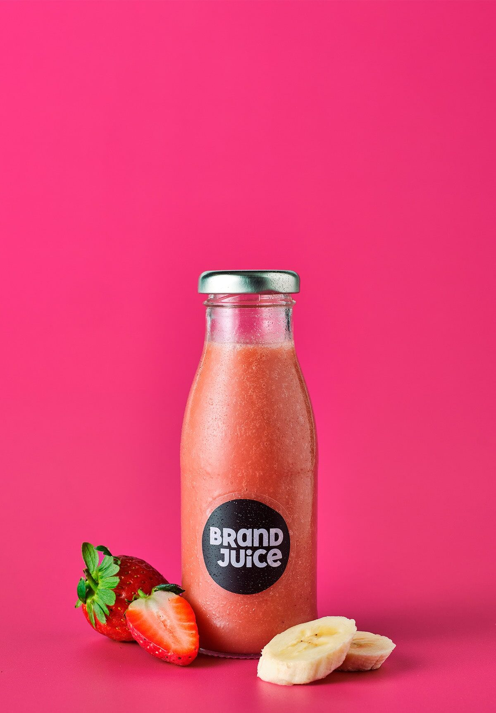

Our susccess story Success stories for cafes and bistros often highlight achieving national or local awards, transitioning to a more profitable business model, and focusing on quality ingredients and customer experience. For example, LA Cafe Bistro has received numerous accolades, including being a finalist for UK Small Business Awards and earning the Good Food Award. Foodie Folk, originally a cafe, became a successful mobile catering business by focusing on outdoor events, demonstrating that adapting the business model can lead to success, according to Trailblazer BBQ. Another key element is building a brand around a specific strength, like a focus on high-quality coffee or unique dishes, coupled with excellent customer service and a strong online presence.
About Us
Welcome to our website, at our cafe we are proud of our exelence, we are more than just a Cafe shop. We are a family and we accept all and more. We have been
up and running since 1991 and it have been a great time. Our founder Mr Moyo is happy to surve you our products and our own recepies produced from our farms
The coffee has been in this home for soo many years and our satisfied customers tell a story that sticks and bringing the sense that our coffee is
right at home. The brewing and our cake products are home made and we can be proud to say are Gluten free. Our milk is
Organic and from well known recognised
farmers.

- Coffee Frappuccino
- Pumpkin Spice Coffee Frappuccino £4.23
- Caramel Frappuccino Blended £4.23
- Coffee £2.50
- Frappuccino Blended £3.23
- Mocha Frappuccino Blended £3.23
- Vampire Frappuccino £4.23
- Chocolate Frappuccino £4.23
- Latte
- Pumpkin Spice Latte £3.50
- Iced Pumpkin Latte £3.50
- Caffe Latte £3.50
- Carramel Mochiato £4.23
- Iced Caramel Mochiato £4.23
- Iced Brown Sugar Oat Shaken Espresso £3.21

- Brewed Coffee
- Filter Coffee £3.00
- Black Coffee £3.00
- Milk Coffee £3.23
- Honey Coffee £2.50
- Doppio £2.50
- Americano £2.20

- Tea
- Mint Tea £2.00
- English Breakfast Tea £3.00
- Early Grey Tea £2.20
- Mist Tea £2.50
- lemmon Tea £2.20
- Honey Tea £2.25

- Bottled Drink
- One Water Still 500ml £3.50
- One Water Sparkling 500ml £3.50
- Peach Iced Tea 330ml £4.00
- Still Lemonade 330ml £4.00
- Apple Mango Juice 500ml £4.00 